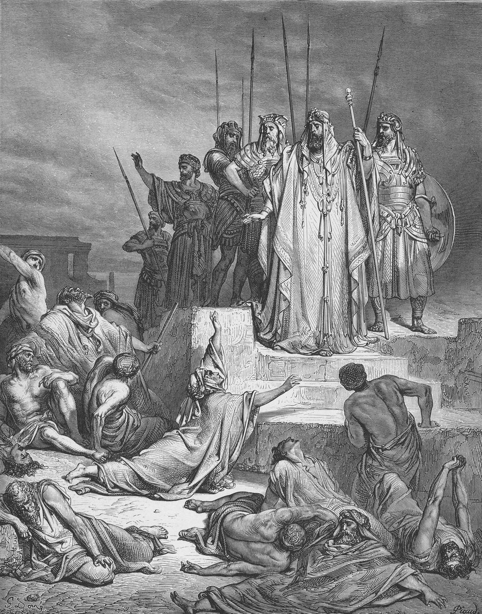

2 Reyes 7 — La Traducción Mister

2 Reyes 6:26–30, el asedio al que responde la promesa de 2 Reyes 7:1. La lámina muestra al rey y a una mujer que clama a él; el hebreo tiene al rey pasando por el muro (6:26), y el grabador lo ha puesto sobre unos escalones.

Notas del traductor — versículo por versículo
⭐ «Oigan la palabra de Jehová». El último versículo del capítulo anterior termina en «¿por qué he de esperar más a Jehová?», y este empieza «Y Eliseo dijo»; la división del capítulo cae entre ambos, y el hebreo no tiene pausa. La TNM 1987 tiene «Escuchen», porque el verbo está en plural. La promesa es un precio: «una seá de flor de harina» está en tres versículos de la Biblia hebrea, este, el 16 donde se cumple y el 18 donde la historia se cuenta otra vez. La RV 1909 y la RV60 tienen «el seah de flor de harina un siclo», la NVI «un seah de harina refinada con un siclo de plata» y la TNM 1987 «una medida de sea de flor de harina valdrá un siclo». Josefo tiene los mismos dos precios y dice que la seá es un modio y medio en medida italiana (Antigüedades 9.71, 9.85).
«Mañana a esta hora». «A esta hora mañana», ke’et machar, está en ocho versículos de la Biblia hebrea. Jezabel lo usa para amenazar a Elías (1 Reyes 19:2) y Ben-adad para amenazar a Acab (1 Reyes 20:6), ambos ya en estas páginas; aquí lleva un precio.
⚠ «El oficial en cuya mano se apoyaba el rey». El título hebreo es ha-shalish, «el tercero», y el griego de la tradición del Vaticano tiene tristatēs. La RV 1909 y la RV60 tienen «un príncipe», la NVI «el ayudante personal del rey» y la TNM 1987 «el adjutor». Josefo tiene «el comandante de la tercera parte» (Antigüedades 9.73). El rey «se apoyaba en su mano» como el señor de Naamán se apoyaba en la de Naamán (2 Reyes 5:18, ya en estas páginas). Radak dice solo que las palabras significan el oficial en quien el rey se apoyaba.
⭐ «Si Jehová hiciera compuertas en los cielos». «Compuertas en los cielos», arubbot ba-shamayim, está en dos versículos de la Biblia hebrea, este y el 19. La redacción más cercana es la del diluvio: «se abrieron las compuertas del cielo» (Génesis 7:11, ya en estas páginas), y «las compuertas de los cielos» está en dos, Génesis 7:11 y 8:2. La RV 1909 y la RV60 tienen «ventanas en el cielo», y la NVI y la TNM 1987 «compuertas». El griego tiene katarraktas, «cataratas». Josefo hace decir al oficial que así como Dios no puede derramar del cielo torrentes de cebada o de flor de harina, esto tampoco puede ocurrir. La respuesta de Eliseo es la misma en las dos versiones: «lo verás con tus ojos, pero de allí no comerás».
⭐ «Cuatro hombres con la enfermedad escamosa». La palabra metsora’im está en dos versículos de la Biblia hebrea, los versículos 3 y 8, ambos aquí. Rashi dice «Giezi y sus hijos», citando Sanedrín 107b, y Radak dice que los rabinos lo dicen; el versículo dice solo «cuatro hombres». La RV 1909, la RV60 y la TNM 1987 tienen «leprosos», y la NVI «hombres que tenían una enfermedad en la piel». Están «a la entrada de la puerta», fuera de la ciudad, como Levítico 13:46 (ya en estas páginas) pone al que la tiene: «fuera del campamento estará su morada». Josefo dice que había una ley en Samaria de que los que la tenían se quedaran fuera (Antigüedades 9.74). El versículo no dice por qué se sientan allí.
«Caigamos sobre el campamento de Aram». Su razonamiento tiene tres casos: la ciudad tiene hambre, quedarse aquí es morir también, y así, «si nos dejan con vida, viviremos; y si nos dan muerte, moriremos». «Caigamos sobre», nippelah el, está en un solo versículo. La RV60 tiene «pasemos al campamento de los sirios», la NVI «vayamos… para rendirnos» y la TNM 1987 «invadamos el campamento».
⚠ «Al anochecer», y «el Señor». Se levantan ba-neshef, «al anochecer», y Aram huye a la misma hora: la palabra está en cinco versículos, dos de ellos aquí (versículos 5 y 7). La RV60 tiene «al anochecer», la RV 1909 «en el principio de la noche», la NVI «al anochecer» y la TNM 1987 «en la oscuridad vespertina». Lo que Aram oyó es lo único del capítulo que el hebreo atribuye a «el Señor», Adonai, en un solo versículo: «el Señor había hecho oír al campamento de Aram estruendo de carros, estruendo de caballos, estruendo de una gran fuerza». Jehová se nombra en los versículos 1, 2, 16 y 19. La RV 1909 imprime «el Señor» aquí y «Jehová» en esos, la RV60 imprime «Jehová» en este versículo también, y la TNM 1987 tiene «Jehová mismo». Rashi dice que solo les pareció como si estuvieran oyendo. Caballos y carros se vieron en 2 Reyes 6:17 (ya en estas páginas); aquí solo se oyen.
«Los reyes de los heteos y los reyes de Egipto». «Los reyes de los heteos» está en tres versículos de la Biblia hebrea: 1 Reyes 10:29, donde los carros y caballos de Salomón salen a «todos los reyes de los heteos y a los reyes de Aram» (ya en estas páginas), 2 Crónicas 1:17 (ya en estas páginas), y este. Josefo hace decir a los arameos que Joram había contratado al rey de Egipto y al rey de las islas (Antigüedades 9.77). La RV60 tiene «los reyes de los heteos y… los reyes de los egipcios», la NVI «los reyes hititas y egipcios» y la TNM 1987 «los reyes de los hititas y… los reyes de Egipto».
⚠ «Plata y oro y vestidos», y «fueron y lo escondieron». Los hombres comen, beben, sacan «plata y oro y vestidos», los esconden y vuelven a una segunda tienda. Plata, oro y vestidos son con lo que Naamán salió (2 Reyes 5:5) y lo que Giezi tomó, plata y vestidos (5:23), ambos ya en estas páginas. Josefo hace que los hombres entren cuatro veces donde el hebreo tiene dos tiendas (Antigüedades 9.80). La RV60 tiene «fueron y lo escondieron», la NVI «fueron a esconderlo todo» y la TNM 1987 «marcharse y esconderlos».
⭐ «No hacemos bien. Este día es día de buenas noticias». «Un día de buenas noticias», yom besorah, está en un solo versículo de la Biblia hebrea. El sustantivo es la besorah de la carrera de Ahimaas: Joab le dice «hoy no eres hombre de noticias» (2 Samuel 18:20), y el rey dice del corredor «viene con buenas noticias» (18:27), ambos ya en estas páginas. El griego de la tradición del Vaticano tiene hēmera euangelias, «día de buenas noticias». La RV 1909 y la RV60 tienen «día de buena nueva», la NVI «un día de buenas noticias» y la TNM 1987 «un día de buenas noticias». Están «callando».
⚠ «Nos alcanzará la culpa». La palabra hebrea es avon, «culpa». La RV 1909 tiene «nos alcanzará la maldad», la RV60 «nos alcanzará nuestra maldad», la NVI «resultaremos culpables» y la TNM 1987 «tendrá que alcanzarnos la culpa». Rashi dice «seremos tenidos por culpables ante el trono». El versículo no dice ante quién serían culpables; van a los porteros.
«Los porteros llamaron, y lo informaron a la casa del rey, adentro». La noticia entra por relevos: los cuatro llaman a los porteros, los porteros llaman al palacio. La RV 1909 y la RV60 tienen «los guardas de la puerta», la NVI «los centinelas» y la TNM 1987 «los porteros». Josefo hace que los cuatro griten a los guardias de la muralla, y que estos avisen a los guardias del rey (Antigüedades 9.81). Dicen «no había hombre allí, ni voz de hombre», y «solo el caballo atado y el asno atado y las tiendas tal como estaban».
⭐ «Lo que Aram nos ha hecho». El rey se levanta de noche, y no se nombra. Dice a sus siervos lo que piensa: «Saben que tenemos hambre, y han salido del campamento a esconderse en el campo, diciendo: Cuando salgan de la ciudad, los agarraremos vivos y entraremos en la ciudad». Josefo tiene la misma sospecha de una emboscada (Antigüedades 9.82). Ketiv y qere aparecen tres veces en este capítulo, en los versículos 12, 13 y 15, y cada vez la forma escrita tiene una he de más: bahasadeh por basadeh, «en el campo», aquí; hahamon por hamon, «la multitud», y behachpazam por bechofzam, «en su prisa». La RV60 tiene «se han escondido en el campo», la NVI «se han escondido en el campo» y la TNM 1987 «esconderse en el campo».
⭐ «Cinco de los caballos que quedan». El plan del siervo es pequeño: cinco de los caballos que quedan en la ciudad, que son «como toda la multitud de Israel que ha quedado en ella» y «como toda la multitud de Israel que ha sido consumida». La frase se dice dos veces, una con «quedar» y otra con «consumida», de modo que la pérdida es la misma de cualquier manera. Rashi dice que «quedan» significa los que no murieron de hambre, y Radak dice que los caballos son tan flacos y pobres como la multitud. La RV60 tiene «cinco de los caballos que han quedado en la ciudad (porque los que quedan acá también perecerán como toda la multitud de Israel que ya ha perecido)», la NVI «cinco de los caballos que aún quedan aquí» y la TNM 1987 «cinco de los caballos restantes que han quedado en la ciudad». Josefo envía dos jinetes hasta el Jordán (Antigüedades 9.83). El hebreo hace que tomen «dos carros con caballos».
«Vayan y vean». «Vayan y vean», lekhu ur’u, está en tres versículos de la Biblia hebrea: 2 Reyes 6:13, donde el rey de Aram lo dice para hallar a Eliseo (ya en estas páginas), este, donde el rey de Israel lo dice para hallar a Aram, y el Salmo 66:5. La RV60 tiene «Id y ved», la TNM 1987 «Vayan y vean» y la NVI «con instrucciones de que investigaran».
⚠ «Hasta el Jordán». Siguen a los arameos hasta el Jordán, y «todo el camino estaba lleno de vestidos y vasijas que Aram había arrojado en su prisa». El Jordán es donde los hijos de los profetas cortaron vigas (2 Reyes 6:4) y donde Naamán se sumergió (2 Reyes 5:14), ambos ya en estas páginas. La RV 1909 y la RV60 tienen «vestidos y enseres», la NVI «ropa y de objetos» y la TNM 1987 «prendas de vestir y utensilios». Josefo tiene el camino lleno de provisiones y armas (Antigüedades 9.84).
⭐ «Conforme a la palabra de Jehová». El pueblo saquea el campamento, y los precios se cumplen: una seá de flor de harina por un siclo y dos seás de cebada por un siclo. Las mismas palabras están al cierre de la tinaja de harina de la viuda (1 Reyes 17:16, con «que habló por mano de Elías») y de los veinte panes (2 Reyes 4:44), ambos ya en estas páginas. La RV60 tiene «conforme a la palabra de Jehová», la NVI «tal como la palabra del Señor lo había dado a conocer» y la TNM 1987 «conforme a la palabra de Jehová». Josefo tiene los mismos precios y dice que el pueblo halló oro, plata, rebaños y gran cantidad de grano (Antigüedades 9.85).
⚠ «El rey puso… a cargo de la puerta al oficial». El rey pone a cargo de la puerta al oficial en quien se apoya, «y el pueblo lo pisoteó en la puerta, y murió, como había dicho el varón de Dios, que habló cuando el rey bajó a él». El versículo no dice por qué lo puso allí. Josefo dice que fue para contener a la multitud (Antigüedades 9.86). «Cuando el rey bajó a él» nombra la escena de 2 Reyes 6:32–33 (ya en estas páginas), donde el mensajero baja y «dijo» queda sin nombrar; Rashi dice «ayer, cuando vino a casa de Eliseo». La RV 1909 y la RV60 tienen «cuando el rey descendió a él», la NVI «cuando el rey fue a su casa» y la TNM 1987 «el rey mismo había nombrado al adjutor». La RV60 tiene «lo atropelló el pueblo», la NVI «el pueblo lo atropelló» y la TNM 1987 «siguió atropellándolo».
⭐ La profecía contada dos veces. Los versículos 18 y 19 dan otra vez el intercambio de los versículos 1 y 2, casi palabra por palabra, y el versículo 20 lo cierra: «y así le sucedió; porque el pueblo lo pisoteó en la puerta, y murió». «Compuertas en los cielos» está en dos versículos, aquí y en el versículo 2. Al oficial se le dice «lo verás con tus ojos, pero de allí no comerás», y lo ve: el versículo dice «el pueblo lo pisoteó en la puerta». La TNM 1987 tiene «Mira que lo vas a ver con tus propios ojos, pero de ello no comerás», la NVI «Pues lo verás con tus propios ojos, pero no llegarás a comerlo» y la RV60 «tú lo verás con tus ojos, mas no comerás de ello».
Dónde está Eliseo. Su nombre está en este capítulo solo en el versículo 1; después es «el varón de Dios», y no está en la historia de los cuatro hombres, la noche del rey ni el camino. El capítulo termina en la puerta. Josefo hace volver a Adar a Damasco, enterarse de que fue Dios y no un enemigo quien asustó a su ejército, y caer enfermo (Antigüedades 9.87).
Patrones que vale la pena llevar adelante
Dónde esta traducción mantiene las palabras exactas y distintas: «una seá de flor de harina» por un siclo; «mañana a esta hora»; «el oficial en cuya mano se apoyaba el rey»; «compuertas en los cielos», como en Génesis 7:11; «la enfermedad escamosa», como en 2 Reyes 5; «caigamos sobre»; «al anochecer»; «el Señor» para Adonai en el versículo 6, frente a «Jehová» en los demás; «plata y oro y vestidos», como en 5:5; «un día de buenas noticias»; «culpa»; «porteros»; «Vayan y vean», como en 6:13; «vasijas»; «conforme a la palabra de Jehová», como en 4:44; y «pisoteó». El hebreo escrito y el leído se registran en los versículos 12, 13 y 15.
Ecos pagados. «¿Por qué he de esperar más a Jehová?» (2 Reyes 6:33); el rey que se apoya en la mano de un oficial (2 Reyes 5:18); las compuertas del diluvio (Génesis 7:11); las amenazas «mañana a esta hora» (1 Reyes 19:2; 1 Reyes 20:6); la enfermedad escamosa fuera del campamento (Levítico 13:46); plata, oro y vestidos (2 Reyes 5:5, 23); caballos y carros vistos (2 Reyes 6:17) y oídos; los reyes de los heteos (1 Reyes 10:29); los mensajeros de Ahimaas (2 Samuel 18:20, 27); «Vayan y vean» (2 Reyes 6:13); el Jordán (2 Reyes 5:14; 2 Reyes 6:4); y las palabras finales sobre la harina y el pan (1 Reyes 17:16; 2 Reyes 4:44).
Ecos plantados. Giezi todavía «el criado del varón de Dios», en el capítulo siguiente (2 Reyes 8:4, ya en estas páginas); el hambre de siete años que Eliseo anuncia allí (2 Reyes 8:1, ya en estas páginas); y Eliseo en Damasco, con Ben-adad rey de Aram enfermo (2 Reyes 8:7, ya en estas páginas).
Siguiente en este libro: 2 Reyes 8 — Eliseo dice a la sunamita que se vaya antes de un hambre de siete años; cuando ella vuelve y clama al rey, este conversa con Giezi sobre todas las grandes cosas que ha hecho Eliseo; y Eliseo va a Damasco, donde Ben-adad está enfermo.